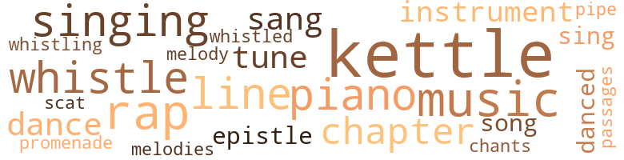

Garies and Their Friends, by Webb, Frank J. (1857)
69 music-related terms matched in this text.
Most frequent terms in this topic: kettle (9); music (5); whistle (4); piano (4); singing (4)
chant.n.01
Definition: a repetitive song in which as many syllables as necessary are assigned to a single tone
| word | sentence |
|---|---|
| chants | How many more had stopped that day to add their contri - butions to the mass which Charlie 's letter now joined P Mer - chants on the brink of ruin had deposited missives whose answer would make or break them ; others had dropped upon the swelling heap tidings that would make poor men rich - rich men richer ; maidens came with delicately written notes , perfumed and gilt-edged , eloquent with love - and cast them amidst invoices and bills of lading . |
chapter.n.01
Definition: a subdivision of a written work; usually numbered and titled
| word | sentence |
|---|---|
| chapter | On the day succeeding the events described in our last chapter , Mr. Walters called upon Mr. Balch , for the purpose of making the necessary preparations for the interment of Mr. and Mrs. Garie . |
| chapters | The reader must imagine that many years have passed away since the events narrated in the preceding chapters transpired , and permit us to re-introduce the characters for - merly presented , without any attempt to describe how that long period has been occupied . |
| chapter | It was during this period that he wrote the glowing letters to Mr. and Mrs. Garie , the effects of which will be discerned in the next chapter . |
| chapter | " We must now return to the Garies , whom we left listening to Mr. Winston 's description of what he saw in Philadelphia , and we need not add anything respecting it to what the reader has already gathered from the last chapter ; our object being now to describe the effect his narrative pro- duced . |
dance.n.01
Definition: an artistic form of nonverbal communication
| word | sentence |
|---|---|
| dance | They hired me out to live once , and I led the people they put me with such a dance , that they was glad enough to send me home again . " |
| dance | " How can I , Charlie ? " said she , with a smile , " if you hold it in your hand and dance about in that frantic style - give it me . |
dance.v.03
Definition: skip, leap, or move up and down or sideways
| word | sentence |
|---|---|
| dance | Well , take that , then , to freshen your memory , " exclaimed one of the party , at the same time dealing him a heavy blow on the cheek , which made the lamp - lights around appear to dance about in the most fantastic style . |
| danced | By dint of great effort they made him understand what was required , and they then continued to make him jump in and out of the hogshead for several minutes ; then , joining hands , they danced around him , whilst he stood knee-deep in the water , shivering , and making the most imploring motions to be set at liberty . |
| danced | " You look like a sylph to-night , Anne , " said he , as she danced about him . |
epistle.n.02
Definition: a book of the New Testament written in the form of a letter from an Apostle
| word | sentence |
|---|---|
| epistle | Yours , & c. , " K. S. De Youngs , Esq. " Charlie could not but smile through his tears , as he read this curious epistle , which was not more remarkable for its graceful composition than its wonderful chirography . |
| epistles | Letters of condolence and notes of congratulation jostled each other as they slid down the brass throat ; widowed mothers ' tender epistles to wandering sons ; the letters of fond wives to absent hus - bands ; erring daughters ' last appeals to outraged parents ; offers of marriage ; invitations to funerals ; hope and despair ; joy and sorrow ; misfortune and success - had glided in one almost unbroken stream down that ever-dis - tended and insatiable brass throat . |
kettle.n.04
Definition: a large hemispherical brass or copper percussion instrument with a drumhead that can be tuned by adjusting the tension on it
| word | sentence |
|---|---|
| kettles | " I 'll see if I ca n't make you den ; " and poor Tom dodged behind pots and kettles to avoid the blows which were aimed at him ; at last , thoroughly enraged by a hard knock on the back , he sprang fiercely into the face of his tormentor , who , completely upset by the suddenness of his attack , fell sprawling on the floor , screaming loudly for help . |
| kettle | Therefore , when he at length appeared , walking leisurely up Winter-street , swinging the kettle about in the most reckless manner , and setting it down on the pavement to play leap-frog over the fire-plugs , her wrath reached a point that boded no good to the young trifler . |
| kettle | Now , whilst Charlie had been giving his attention to the difficulties growing out of the games of marbles , he did not observe that one of the disputants was possessed of a tin kettle , in appearance very similar to his own , by the side of which , in the excitement of the moment , he deposited his own whilst giving a practical illustration of his view of the point under consideration . |
| kettle | Having accomplished this to his entire satisfaction , he resumed what he supposed was his kettle , and went his way rejoicing . |
| kettle | Seating herself upon a stool , she jerked off the lid of the kettle , and , to her horror and dismay , found not the favourite haricot , but a piece of cheese-rind , a crust of dry bread , and a cold potatoe . |
| kettle | He could scarcely believe his eyes ; he got up and looked in the kettle , but found no haricot . |
| kettle | " I saw - I saw - I - I -------- " " You saw - you saw , " replied the indignant Caddy , imi - tating his tone ; and taking up the kettle , she began to examine it more closely . |
| kettle | " Why , this is n't even our kettle ; look at this lid . |
| kettle | Just then it occurred to Charlie that at the place where he had adjusted the dispute about the marbles , he had observed in the hands of one of the boys a kettle similar to his own ; and it flashed across his mind that he had then and there made the unfortunate exchange . |
| kettle | On the stair-way he was met by Kinch and Caddy , who were tugging up a large kettle of water . |
music.n.01
Definition: an artistic form of auditory communication incorporating instrumental or vocal tones in a structured and continuous manner
| word | sentence |
|---|---|
| music | When Charlie was brought into the presence of his mother and Mrs. Thomas , the latter informed him , that , wicked as had been his conduct towards herself , she was willing , for his mother 's sake , to look over it ; hut that he must humble himself in dust and ashes before the reigning sovereign of the culinary kingdom , who , making the most of the injury inflicted on her toe , had declared herself unfit for service , and was at that moment ensconced in a large easy-chair , listening to the music of her favourite smoke-jack , whilst a temporary cook was getting up the dinner , under her immediate supervision and direction . |
| music | She had good regular features , hazel eyes , and long chestnut curls : a mouth with the sweetest expression , and a voice so winning and affectionate in its tone that it went straight to the hearts of all that listened to its music . |
| music | Standing by the piano , turning over the leaves of some music , and merrily humming an air , was a young girl of extremely petite and delicate form . |
| music | There was something deliciously airy and fairylike in her motions , and as she slightly moved her feet in time to the music she was humming , her thin blue dress floated about her , and undulated in harmony with her graceful motions . |
| music | But little sister , it appeared , did not wish to be taken , and she made the best of her way off , holding on by the chairs , and tottering over the great gulfs between them , until she succeeded in reaching the music-stand , where she paused for a while before beginning to destroy the music . |
musical_instrument.n.01
Definition: any of various devices or contrivances that can be used to produce musical tones or sounds
| word | sentence |
|---|---|
| instrument | " But you begged me to , " said she , pouting , as she took her seat at the instrument . |
| instrument | And he sat struggling with himself to obtain the necessary courage to fulfil the purpose of his visit , and became so deeply engrossed with his own reflections as to scarcely even hear the sound of the instrument . |
| instrument | Ana he leant back and repeated the word " home , " and paused afterward , as one touches some favourite note upon an instrument , and then silently listens to its Vibra - tions . |
passage.n.06
Definition: a short section of a musical composition
| word | sentence |
|---|---|
| passages | read them again - and yet again ; pore over their con - tents - dwell on those passages replete with tenderness , until every word is stamped upon thy breaking heart - linger by them as the weary traveller amid Sahara 's sand pauses by some sparkling fountain in a shady oasis , tasting of its pure waters ere he launches forth again upon the arid waste beyond . |
piano.n.01
Definition: a keyboard instrument that is played by depressing keys that cause hammers to strike tuned strings and produce sounds
| word | sentence |
|---|---|
| piano | Mrs. Garie was stretched upon the sofa , covered with a piano cloth ; and her husband was laid upon a long table , with a silk window-curtain thrown across his face . |
| piano | Standing by the piano , turning over the leaves of some music , and merrily humming an air , was a young girl of extremely petite and delicate form . |
| piano | There are several noticeable additions to the furniture of the apartment ; amongst them an elegantly-carved work - stand , upon which some unfinished articles of children 's apparel are lying ; a capacious rocking-chair , and grand piano . |
| piano | We have before said that Esther 's cap looked as though it felt itself in an inappropriate position - that it had got on the head of the wrong individual - and baby , no doubt in deference to the cap 's feelings , tore it off , and threw it in the half-open piano , from whence it was extricated with great detriment to the delicate lace . |
pipe.n.04
Definition: a tubular wind instrument
| word | sentence |
|---|---|
| pipe | The shining copper tea-kettle was brought from the stove where it had been seething and singing for the last halt-hour ; then the tea-pot of china received its customary quantity of tea , which was set upon the Btove to brew , and carefully placed behind the stove pipe that no accidental touch of the elbow might bring it to destruction . |
promenade.n.01
Definition: a formal ball held for a school class toward the end of the academic year
| word | sentence |
|---|---|
| promenade | His newspaper in the morning , a good book , a stroll upon the fashionable promenade , and a ride at dusk , enabled him to dispose of his time without being oppressed with ennui . |
rap.n.05
Definition: genre of African-American music of the 1980s and 1990s in which rhyming lyrics are chanted to a musical accompaniment; several forms of rap have emerged
| word | sentence |
|---|---|
| rap | The constable here cut short any further colloquy by rap - ping impatiently on the door , then opening it , and exclaim - ing , " Come , now it is ten o'clock - time that you were in court ; " and the two started out , followed by Mr. Stevens . |
| rap | Caroline gave a fierce rap at the door , which was opened by old Aunt Rachel , the fat cook , who had lived with the Thomases for a fabulous length of time . |
| rap | As for saying it is innate , or that there is any natural antipathy to that class , it 's all perfect folly ; children are not born with it , or why should n't they shrink from a black nurse or playmate P It 's all bosh , " con - cluded he , indignantly , as he brought his cane down with a rap . |
| rap | On arriving , he gave a faint rap , that was responded to by Aunt Rachel , who saluted him with - " Oh , yer 's come , has yer - wipe your feet , child , and come in quick . |
| raps | raps you can , if you go to the hospital to-morrow ; but whether you 'll find him living or dead is more than I can say . |
scat.n.01
Definition: singing jazz; the singer substitutes nonsense syllables for the words of the song and tries to sound like a musical instrument
| word | sentence |
|---|---|
| scat | She just arrived in time to see it safely closed , and toddled back to her mother , as happy as if she had succeeded in running riot over its contents , and scat - tering them all over the floor . |
sing.v.02
Definition: produce tones with the voice
| word | sentence |
|---|---|
| sang | The birds that sang about the windows were not more cheerful than herself , and when Mr. Garie heard her merry voice singing her lively songs , as in days gone by , he experienced a feeling of satisfaction at the pleasant result of his acqui - escence in her wishes . |
| sang | He fancied the birds sang it to him in his morning walk , and that he heard it in the ripple of the little stream that flowed at the foot of his garden . |
| singing | Mr. Morton , who , as we have said before , was not entirely sober , was singing a popular melody , and keeping time upon the door with the head of his cane . |
| sing | she declares she never can stand it : she did not dream that to be married she would have been subjected to such a world of trouble , or she would never have consented , - never l And then Clarence , too , comes in every morning , and re - mains half the day , teasing her to play , to talk , or sing . |
| sing | This task finished , he was pressed into service by Aunt Rachel , to pick and stone some raisins which she gave him , with the injunction either to sing or whistle all the time he was " at 'em ; " and that if he stopped for a moment she should know he was eating them , and in that case she would visit him with condign punishment on the spot , for she did n't care a fig whose child he was . |
| sang | She would smile vacantly when her father smoothed her hair or kissed her cheek ; but she never laughed , or sang and played , as in days gone by ; she would recline for hours on the sofa in her room gazing vacantly in the air , and taking apparently no interest in anything about her . |
singing.n.01
Definition: the act of singing vocal music
| word | sentence |
|---|---|
| singing | The birds that sang about the windows were not more cheerful than herself , and when Mr. Garie heard her merry voice singing her lively songs , as in days gone by , he experienced a feeling of satisfaction at the pleasant result of his acqui - escence in her wishes . |
| singing | The shining copper tea-kettle was brought from the stove where it had been seething and singing for the last halt-hour ; then the tea-pot of china received its customary quantity of tea , which was set upon the Btove to brew , and carefully placed behind the stove pipe that no accidental touch of the elbow might bring it to destruction . |
| singing | The windows of the mills are all thrown open , and now and then the voices of some operatives , singing at their work , steal forth in company with the whir and hum of the spindles , and mingle with the splash of the waterfall ; and the united voices of nature , industry , and man , harmonize their swelling tones , or go floating upward on the soft July air . |
song.n.01
Definition: a short musical composition with words
| word | sentence |
|---|---|
| songs | The birds that sang about the windows were not more cheerful than herself , and when Mr. Garie heard her merry voice singing her lively songs , as in days gone by , he experienced a feeling of satisfaction at the pleasant result of his acqui - escence in her wishes . |
| song | Not so with little Birdie ; she is happy - oh , so happy : she rises with a song upon her lips , and is chirping in the sunshine she herself creates , the live-long day . |
tune.n.01
Definition: a succession of notes forming a distinctive sequence
| word | sentence |
|---|---|
| line | Now do not doubt me - I mean that very gentleman , whose polished manners and irreproachable appearance might have led you to suppose him descended from a long line of illustrious ancestors . |
| line | You appear to know everybody - who is anybody - south of Mason and Dixon 's line ; can you give me any information respecting a family by the name of Garie , who live or formerly did live in the vicinity of Savannah ? " |
| melody | Mr. Morton , who , as we have said before , was not entirely sober , was singing a popular melody , and keeping time upon the door with the head of his cane . |
| tune | If that terrible misfor - tune had not befallen father , I should have learned his trade . " |
| lines | Charlie sat down as directed , and dashed off a few lines , which he banded to Mr. Twining , who looked at it over and over ; then rising , he beckoned to his partner to follow him into an adjoining room . |
| melodies | At first he thought it great fun , and he hummed some of the popular melodies of the day , and kept time with his foot and the spatula . |
| tunes | But pretty soon he exhausted his stock of tunes , and then the performances did not go off so well . |
| tune | His large for - tune kept some two or three whites about him , but he knew they were leeches seeking to bleed his purse , and he wisely avoided their society . |
| line | When a gentleman presented himself at the bar wearing boots entirely too small for him , with his hat so far down upon his forehead as almost to obscure his eyes , and whose mouth was filled with oaths and tobacco , he was generally looked upon as a favourable specimen to operate upon ; and if he cursed the waiters , addressed any old man amongst them as " boy , " and was continually drinking cock-tails and mint-juleps , they were sure of their man ; and then would tell him the most astonishing and distressing tales of their destitution , expressing , almost with tears in their eyes , their deep desire to return to their former masters ; whilst perhaps the person from whose mouth this tale of woe proceeded had been born in a neighbouring street , and had never been south of Mason and Dixon 's line . |
whistle.v.01
Definition: make whistling sounds
| word | sentence |
|---|---|
| whistle | But I rather think the heirs would have to whistle for him after Moyese was put under ground . |
| whistle | Mr. Stevens gave a low whistle , and looking at his wife , pointed to the door . |
| whistling | " Look here , old fellow , " said Charlie ; " it wo n't do for you to be lounging on the door-steps of the office , nor be whistling for me under the windows . |
| whistle | At last the faint scream of the steam-whistle was heard , and soon the lumbering locomotive came puffing and snorting on its iron path , dashing on as though it could never stop , and making the surrounding hills echo with the unearthly scream of its startling whistle , and arousing to desperation every dog in the quiet little town . |
| whistle | This task finished , he was pressed into service by Aunt Rachel , to pick and stone some raisins which she gave him , with the injunction either to sing or whistle all the time he was " at 'em ; " and that if he stopped for a moment she should know he was eating them , and in that case she would visit him with condign punishment on the spot , for she did n't care a fig whose child he was . |
| whistled | " Phew ! " whistled George Stevens ; and then , after pausing a moment , he asked , " Do you know anything about this Mr. Garie - anything , I mean , respecting his family ? " |
287 violence-related terms matched in this text.
Most frequent terms in this topic: kill (15); killed (14); hate (11); murder (9); fight (9)
abhorrence.n.01
Definition: hate coupled with disgust
| word | sentence |
|---|---|
| execrations | Two or three fell on the spot , and were carried off by their comrades with fearful execrations . |
| abhorrence | Clarence attempted to speak , but Mr. Bates glared at him , and continued - " There are laws to punish thieves and coun - terfeits - but such as you may go unchastised , except by the abhorrence of all honourable men . |
| execration | Had you been unaware of your origin , and had the revelation of this gentleman been as new to you as to me , you would have deserved sympathy ; but you have been acting a lie , claiming a position in society to which you knew you had no right , and deserve execration and contempt . |
aggravation.n.01
Definition: an exasperated feeling of annoyance
| word | sentence |
|---|---|
| aggravation | Caddy employed her in bringing down glass and china from a third-story pantry ; and , moreover , only per - mitted her to bring a small quantity at a time , which ren - dered a number of trips strictly necessary , to the great aggravation and serious discomfort of the fat girl in question . |
aggravation.n.02
Definition: unfriendly behavior that causes anger or resentment
| word | sentence |
|---|---|
| provocation | Mrs. Ellis 's fondness and admiration of her son , although almost amounting to weakness , were yet insuffi - cient to prevent her from feeling that his conduct , even after making due allowance for the provocation he had received , could not be wholly excused as mere boyish impetuosity and love of mischievous fun . |
| provocation | These gentry had for a long time been the terror of the district in which they roamed , and had rendered themselves highly obnoxious to some of the rival factions on the borders of their own territory ; they had the unpleasant habit of pitch - ing into and maltreating , without the slightest provocation , any one whom their practised eyes discovered to be a rival ; and by such outrages they had excited in the bosoms of their victims a desire for revenge that only awaited the occasion to manifest itself . |
| provocation | Now , for instance , three or four nights since , a gang of villains assaulted one of my tenants - a coloured man - upon his own doorstep , and nearly killed him , and that , too , without the slightest provocation ; they then set fire to the house , which was half consumed before it could be extinguished ; and it is here stated that the coloured people were the aggressors , and whilst they were engaged in the melee , the house caught fire accidentally . " |
anger.n.01
Definition: a strong emotion; a feeling that is oriented toward some real or supposed grievance
| word | sentence |
|---|---|
| anger | Did I treat you as my feelings dictated , you would understand what is meant by the weight of a father 's anger ; but I do not wish the world to know that my daughter has been wasting her affections upon a worthless nigger ; that is all that protects you ! |
annoyance.n.02
Definition: anger produced by some annoying irritation
| word | sentence |
|---|---|
| vexation | " Do n't make a jest of me , Mr. Walters , " said Esther , and as she spoke her eyes moistened and her lip quivered with vexation . |
| vexation | Lizzie raised the wick of the lamp in accordance with his desire , and then sat down with an expression of annoyance and vexation on her countenance . |
assail.v.01
Definition: attack someone physically or emotionally
| word | sentence |
|---|---|
| assaulted | " Stop , gentlemen - stop - for God 's sake , stop , " he cried , as soon as he could regain the breath that had been almost knocked out of him by the tremendous blow he had just received - " do n't kill an innocent man ; upon my honour I never saw you before , nor ever assaulted any of you in my life . |
| assaulted | Now , for instance , three or four nights since , a gang of villains assaulted one of my tenants - a coloured man - upon his own doorstep , and nearly killed him , and that , too , without the slightest provocation ; they then set fire to the house , which was half consumed before it could be extinguished ; and it is here stated that the coloured people were the aggressors , and whilst they were engaged in the melee , the house caught fire accidentally . " |
| assaulted | " You were at home , and saw the house of your cousins assaulted , and made no effort to succour them or their children . |
| assaulted | Here are a number of houses assaulted by a mob . |
battle.v.01
Definition: battle or contend against in or as if in a battle
| word | sentence |
|---|---|
| battling | and deem thee better off resting upon thy cold pillow of earth , than battling with that malig - nant sentiment that persecuted thee , and has crushed energy , hope , and life from many stronger hearts . |
bleeding.n.01
Definition: the flow of blood from a ruptured blood vessel
| word | sentence |
|---|---|
| hemorrhage | he is frightened at that hemorrhage , and is afraid it will be fatal ; but there is not any danger , he only requires to be kept quiet - he will soon come round again , no doubt . |
brain.v.02
Definition: kill by smashing someone's skull
| word | sentence |
|---|---|
| brained | One of them - to whom be bad in conversation partially opened his mind , and explained that his intended removal grew out of anxiety respecting the children , and his own desire that they might be where they could enjoy the advantages of schools , & c. - sneered almost to his face at what be termed his crack - brained notions ; and subsequently , in relating to another person the conversation he bad bad with Mr. Garie , spoke of him as " a soft-headed fool , led by the nose by a yaller wench . |
bruise.n.01
Definition: an injury that doesn't break the skin but results in some discoloration
| word | sentence |
|---|---|
| bruises | Boxes were packed with books , pictures , and linen ; plate and china were wrapped and swaddled , to pre - rant breakage and bruises ; carpets were taken up , and packed away ; curtains taken down , and looking-glasses corered . |
brush.n.06
Definition: a minor short-term fight
| word | sentence |
|---|---|
| skirmishes | Aunt Rachel and he had daily skirmishes , in which he was very frequently worsted . |
| skirmishes | To-day he was possessed of all these requisites , but there was also in the perspective a long array of skirmishes with Aunt Rachel , who , he knew , looked on him with an evil eye , and who had frequently expressed herself regarding him , in his presence , in terms by no means complimentary or affectionate ; and the manner in which she had intimated her desire , on one or two occasions , to have an opportunity of reforming his personal habits , were by no means calculated to produce a happy frame of mind , now that the opportunity was about to be afforded her . |
contemn.v.01
Definition: look down on with disdain
| word | sentence |
|---|---|
| despised | He despised mats , and seldom or never wiped his feet on entering the house ; he was happiest when he could don his most dilapidated unmentionables , as he could then sit down where he pleased without the fear of his mother before his eyes , and enter upon a game of marbles with his mind perfectly free from all harassing cares growing out of any possible accident to the aforesaid garments , so that he might give that attention to the game that its importance demanded . |
| scorn | " Your conscience has become troublesome very suddenly , " rejoined Mr. Stevens , with a look of angry scorn ; " it 's strange it do n't appear to have troubled you in the least during the last few weeks , whilst you have been knocking niggers on the head so freely . " |
| despised | She could not restrain her admira - tion of this display of talent on the part of one of her despised race ; she was continually breaking out with expres - sions of wonder and applause . |
| contemned | How approaches he the bar of that awful Judge , whose commands he has set at nought , and whose power he has so often contemned ? |
| despised | He was very wretched and lonely : he felt ashamed to seek the society of coloured men now that the whites despised and rejected him , so he lived apart from both classes of society , and grew moody and misanthropic . |
| despise | I know they look down upon and despise me because I 'm a coloured woman . |
contend.v.06
Definition: be engaged in a fight; carry on a fight
| word | sentence |
|---|---|
| contending | The passengers now began to cluster around the contending parties , and to take sides in the controversy . |
| contending | My client was one of the contending parties ; and has been sus - pected , from some imprudent expressions of his , to have been the man who struck the fatal blow . |
craze.n.02
Definition: state of violent mental agitation
| word | sentence |
|---|---|
| frenzy | One or two of the more merciful endeavoured to interfere against killing him outright ; but the frenzy of the majority triumphed , and they determined to cast him into the street below . |
cut.n.05
Definition: a wound made by cutting
| word | sentence |
|---|---|
| gashes | I hardly think he " will last twelve hours more , he 's been dreadfully beaten ; there are two or three gashes on his head , his leg is broken , and his hands have been so much cut , that the surgeon thinks they 'll never be of any use to him , even if he recovers . " |
dagger.n.01
Definition: a short knife with a pointed blade used for piercing or stabbing
| word | sentence |
|---|---|
| dagger | As he sat there , looking at George Stevens , he became a murderer in his heart ; and if an invisible dagger could have been placed in his hands , he would have driven it to the hilt in his breast , and stilled for ever the tongue that was destined to betray him . |
defy.v.01
Definition: resist or confront with resistance
| word | sentence |
|---|---|
| withstand | Both Mrs. Thomas and Charlie 's mother stood aghast at this unexpected declaration ; and the result of a long confer - ence , held by the two , was that Charlie should be taken home , Mrs. Ellis being unable to withstand his tears and entreaties . |
| withstanding | She was an old woman when Mrs. Ellis came as a girl into the family , and had given her many a cuff in days long past ; in fact , not - withstanding Mrs. Ellis had been married many years , and had children almost as old as she herself was when she left Mr. Thomas , Aunt Rachel could never be induced to regard her otherwise than as a girl . |
| withstanding | They all described the excitement as growing more intense ; that the houses of various prominent Aboli - tionists had been threatened ; that an attempt had been made to fire one of the coloured churches ; and that , not - withstanding the rioters made little scruple in declaring their intentions , the authorities were not using the slightest effort to restrain them , or to protect the parties threatened . |
| withstanding | Caddy was , of course , completely upset by the intelligence ; for , not - withstanding that she and the maid-of-all-work lived in art almost perpetual state of house-cleaning , nothing appeared to her to be in order , and worse than all , there was nothing to eat . |
destroy.v.04
Definition: put (an animal) to death
| word | sentence |
|---|---|
| destroyed | Now your motive is clear as day - you wanted his money , and destroyed him to obtain it ! |
| destroyed | you allow him to be destroyed without an effort to save him , and immediately claim his property . |
| destroyed | Our home has been destroyed ; and , worse than all , our poor father was caught , and so severely beaten by the rioters that for some days his life was entirely despaired of . |
| destroyed | No one would recognize him as the Charlie of old , whose escapades had so destroyed the comfort and harmony of Mrs. Thomas 's establishment ; and only once , when he held up the baby , and threatened to let her tear the paper ornaments from the chandelier , was there a twinkle of the Charlie of old looking out of his eyes . |
draw.v.23
Definition: pull (a person) apart with four horses tied to his extremities, so as to execute him
| word | sentence |
|---|---|
| draw | Then his mind strayed off to the marble-ground , where he would play imaginary games , and laugh over his success in such a wild and frightful manner as to draw tears from the eye3 of all around him . |
| draw | Smash in their windows , break their furniture , and , if possible , set one of the houses on fire , and that will draw attention to that locality whilst you are operating elsewhere . |
| drawing | " Now , Mr. Stevens , " said he , drawing up a chair , " we will talk over this matter dispassionately , and try and arrive at some amicable arrangement : be kind enough to inform me what your claims are . " |
dudgeon.n.01
Definition: a feeling of intense indignation (now used only in the phrase `in high dudgeon')
| word | sentence |
|---|---|
| dudgeon | The amiable partner of Mr. Stevens sat in high dudgeon , at being so long restrained from her favourite beverage by the unusually deferred absence of her husband . |
eliminate.v.03
Definition: kill in large numbers
| word | sentence |
|---|---|
| eradicating | I 've cherished as strong prejudices against coloured people as any one ; but I tell you , seeing how contemptible it makes others appear , has gone a great way towards eradicating it in me . |
enrage.v.01
Definition: put into a rage; make violently angry
| word | sentence |
|---|---|
| enraged | " I 'll see if I ca n't make you den ; " and poor Tom dodged behind pots and kettles to avoid the blows which were aimed at him ; at last , thoroughly enraged by a hard knock on the back , he sprang fiercely into the face of his tormentor , who , completely upset by the suddenness of his attack , fell sprawling on the floor , screaming loudly for help . |
envy.n.01
Definition: a feeling of grudging admiration and desire to have something that is possessed by another
| word | sentence |
|---|---|
| envy | Mr. Garie had paid two thousand dollars for her , and was the envy of all the young bucks in the neighbourhood who had competed with him at the sale . |
| envy | At this request the girls did not seem greatly pleased r and Miss Caddy , who already , in imagination , had excited the envy of all her female friends by the grand entrie she was to make at the Lyceum , leaning on the arm of Winston , gave her father a by no means affectionate look , and tying her bonnet-strings with a hasty jerk , started out in company with her sister . |
ferocity.n.01
Definition: the property of being wild or turbulent
| word | sentence |
|---|---|
| fierceness | Nothing daunted , Mr. Ellis attacked them with such fierceness and energy that they were forced to descend , muttering the direst curses . |
| ferocity | The words had scarcely passed his lips , when Walters sprang upon him with the ferocity of a tiger , and seizing him by the throat , shook and whirled him about as though he were a plaything . " |
fight.n.02
Definition: the act of fighting; any contest or struggle
| word | sentence |
|---|---|
| combats | " Yes , I 've heard something respecting it , " replied the mayor , " but I believe they were nothing more than trifling combats between the negroes and the whites in that vicinity . " |
fight.n.05
Definition: a boxing or wrestling match
| word | sentence |
|---|---|
| fight | The fact is , Charlie was , as lions are supposed to be , quite disinclined for a fight after a hearty meal , so he followed Caddy upstairs to the second story . |
| fight | " But that was in a fair fight , and in hot blood ; it is n't like planning to kill a man , squire . " |
| fight | " Do you call it a fair fight when you steal up behind a man , and break his skull with a slung shot ? " asked Mr. Stevens . |
| fight | We had An Awful fight , And I was There , and I was One of The Captings . |
| fight | - fight with a nigger - that is too good a joke ! " |
fight.v.02
Definition: fight against or resist strongly
| word | sentence |
|---|---|
| fighting | And then he has been fighting and struggling with me all the way home . |
| fight | " They 're not so aisily bate out - they fight like sevin divils . |
| fighting | It 's gettin ' tiresome ; one do n't like to be fighting the nagurs all the time for the mere fun of the thing - it do n't pay , for divil a cent have I got for all my trouble ; and ye said ye would pay well , ye remimber . " |
| fight | " It takes us ; we fight with hot water . |
| fight | your battle of life will be a hard one to fight ! " |
| fight | " I do n't intend to be conquered , " he continued ; " I 'll fight it out to the last - this wo n't discourage me . |
| fighting | When we ripen into maturity , and are fighting our own way through the battle of life , we deem him swift enough of foot , and sometimes rather hurried ; but when old age comes on , and death and the grave are foretold by trembling limbs and snowy locks , we wonder that our course has been so swiftly run , and chide old Time for a somewhat hasty and precipitate individual . |
flog.v.01
Definition: beat severely with a whip or rod
| word | sentence |
|---|---|
| flog | Had I had such a teacher when a boy , I should have got on charmingly ; but mine was a cross old widow , who wore spectacles and took an amazing quantity of snuff , and used to flog upon the slightest pretence . |
| flogged | Advancing to Mr. Stevens , he tapped that gentleman on the shoulder , and said , with mock civility , and in as bland a tone as he could assume , " It 's really very obliging of you , mister , to come up here to be flogged - saves us the trouble of coming down to you . |
| flogging | There was the average amount of flogging per - formed ; cakes , nuts , and candy , confiscated ; little boys on the back seats punched one another as little boys on the back seats always will do , and were flogged in consequence . |
| flogged | There was the average amount of flogging per - formed ; cakes , nuts , and candy , confiscated ; little boys on the back seats punched one another as little boys on the back seats always will do , and were flogged in consequence . |
fury.n.01
Definition: a feeling of intense anger
| word | sentence |
|---|---|
| rage | Yells of rage and agony ascended from the throng , who , not seeing any previous signs of life in the house , had no anticipation of so prompt and severe a response to their attack . |
| fury | These dinners we 're ' spectin to have has just set her wild - she is mad as fury ' bout 'em - and she snaps me up just as if I was to blame * . |
| rage | During the narration , the old man became almost frantic with rage and sorrow , bursting forth once or twice with the most violent exclamations ; and when George Stevens concluded , he rose and said , in a husky voice - " I 'll kill him , the infernal hypocrite ! |
| rage | I 'll go to him , " added he , his face flushed , and his white hair almost erect with rage ; " I 'll murder him - there 's not a man in the city will blame me for it , " and he grasped his cane as though he would go at once , and inflict summary vengeance upon the offender . |
| rage | I met him the other day in a towering rage : it appears , that he owns ten thousand dollars ' worth of Btock , in a railroad extending from this to a neighbouring city . |
gag.v.06
Definition: cause to retch or choke
| word | sentence |
|---|---|
| choking | choking with the laughter that Charlie 's vexed look caused him to suppress - " get into the pants ; " at the same time tying a string round Charlie 's neck . |
| choked | It made me so mad I could have choked him - it is bad enough to be treated with hauteur by a white man , but contempt from a nigger is almost unendurable . " |
| choked | Here Mr. Garie indulged in another burst of laughter so side-shaking and merry , that the contagion spread even to the little girl in Mrs. Garie 's arms , who almost choked her - self with the tea her mother was giving her , and who had to he hustled and shaken for some time before she could be brought round again . |
| chokes | I feel so miserable , everything chokes me . " |
| choking | At last Esther pressed his hand , and , in a choking voice , exclaimed , " Charlie , my dear boy , I 'd give my life if it would change your complexion - if it would make you white ! |
| choking | With a great effort Charlie repressed his tears , and bidding them good morning in a choking voice , hastened from the room . |
| choking | His blue coat was brazen with buttons , and his white cravat tied with choking exactness ; spotless vest , black pants , and such patent leathers as you could have seen your face in with ease . |
| choked | " Ai n't you going ? " continued the irate Caddy , almost choked with wrath at the sight of the steps , over which she had so recently toiled , scored in every direction with black marks . |
grudge.n.01
Definition: a resentment strong enough to justify retaliation
| word | sentence |
|---|---|
| grievances | He listened , therefore , with attention to the details of Charlie 's grievances , as well as of his misdemeanours , and some credit is due to him for the unshaken gravity he preserved throughout . |
| grudge | I owe him an old grudge , and I want you to pay it off for me . " |
gun.n.01
Definition: a weapon that discharges a missile at high velocity (especially from a metal tube or barrel)
| word | sentence |
|---|---|
| Guns | Guns were stacked in the corner , a number of pistols lay upon the mantelpiece , and a pile of cartridges was heaped up beside a small keg of powder that stood upon the table opposite the fire-place . |
| guns | put that down , Esther , put that down immediately , " almost screamed Mrs. Ellis ; " what with your speeches and your guns you 'll quite set me crazy ; do take it from her , Walters ; it will certainly go off . " |
| guns | " Well , I 'm afraid of guns , loaded or unloaded ; they are dangerous , all of them , whether they have anything in them or not . |
| guns | We do n't believe in powder and shot , and do n't want anything to do with guns ; for my part I 'm afraid of them , so please let us go by - do , now , that 's a good soul ! " |
| gun | " Do n't fire yet , " said Mr. Walters to one of the young men who had his hand upon a gun . |
| guns | " Then here goes , " said he , turning the light upon the crowd below - who , having some experience in what would follow , did their best to get out of reach ; but they were too late - for the appearance of the light was followed by the instantaneous report of several guns which did fearful exe - cution amidst the throng of ruffians . |
| guns | The firing now became frequent on both sides , and Esther 's services came into constant requisitions It was in vain that her father endeavoured to persuade her to leave the room ; notwithstanding the shutters had been thrown open to facilitate operations from within and the exposure thereby greatly increased , she resolutely refused to retire , and con - tinued fearlessly to load the guns and hand them to the men . |
| gun | This , " said she , holding up a dipper , " is my gun . |
| Guns | The Mob had Guns as Big as Cannun ; And they Shot them Off , and the holes Are in The Shutter yet ; And when You come Back , I will show them to You . |
| guns | and tell your mother they 're coming , thousands of them ; they 've guns , and swords , and clubs . |
hate.n.01
Definition: the emotion of intense dislike; a feeling of dislike so strong that it demands action
| word | sentence |
|---|---|
| hatred | " I presume , madam , " said she , in a hurried and agitated tone , " that you are very ignorant of the people upon whom you have just been heaping such unmerited abuse , and therefore I shall not think so hardly of you as I should , did I deem your language dictated by pure hatred ; but , be its origin what it may , it is quite evident that our farther acquaintance could be productive of no pleasure to either of us - you will , therefore , permit me , " continued she , rising with great dig - nity , " to wish you good evening ; " and thus speaking , she left the room . |
hate.v.01
Definition: dislike intensely; feel antipathy or aversion towards
| word | sentence |
|---|---|
| detested | This was too much for Charlie ; the promise of another suit of the detested livery quite overcame him , and he burst into tears . |
| hate | By the Way , Jule , " continued he , " how I hate that nigger Walters , with his grand airs . |
| detest | It quite relieves my mind about one thing : ever since Mr. Stevens purchased our house we have been tor - mented with the suspicion that Walters would put a family of niggers in this ; and if there is one thing in this world I detest more than another , it is coloured people , I think . " |
| detested | He had detested Mrs. Stevens ever since the night she bad ejected him so rudely from her house , and since then had learned to some extent what was meant by the term nigger woman . |
| hate | " I hate to appear so pressing , " resumed Mrs. Stevens ; " but I feel it my duty to suggest that you had better do it at once , and before the rest of the scholars . |
| hate | " The cursed haughty brute , " muttered Mr. Stevens , as he jerked the bell with violence ; " how I hate him ! |
| hated | I hated him before I knew - but now I -------- ; " as he spoke , the door was opened by a little servant that Mrs. Stevens had recently obtained from a charity institution . |
| hated | Mr. Stevens , in happy unconsciousness , that , owing to his habiliments , he represented one of the well-known and hated faction , walked on quite leisurely ; but , unfortunately for him , his way home lay directly through the camp of their bitterest and most active enemies . |
| hate | " I wish , dear , you could put off your journey until I am better , " said Mrs. Garie , faintly ; " I do hate you to go just now . " |
| hate | When I think of how much injury they have done us , I hate them I I know it 's wrong to hate anybody - but I ca n't help it ; and I believe God hates them as much as I do ! " |
| hate | When I think of how much injury they have done us , I hate them I I know it 's wrong to hate anybody - but I ca n't help it ; and I believe God hates them as much as I do ! " |
| hates | When I think of how much injury they have done us , I hate them I I know it 's wrong to hate anybody - but I ca n't help it ; and I believe God hates them as much as I do ! " |
| hate | I hate them both like poison , " and as he concluded , he bit into a piece of bread as fiercely as if he were already engaged in a desperate battle with aunt Rachel , and was biting her in self-defence . |
| hate | well , I do n't like any of them - I hate them all ! " |
| hate | " Oh , Cad , " he exclaimed , rubbing his eyes , " how I do hate to go up there ! |
| hate | Charlie is such a bright , active little fellow ; I hate to have him living there as a servant . |
| hate | " Oh , I do hate to wear this confounded livery ! " said Charlie , dolefully - " the boys scream ' Johnny Coat-tail ' after me in the streets , and call me ' blue jay , ' and ' blue nigger , ' and lots of other names . |
hostility.n.01
Definition: a hostile (very unfriendly) disposition
| word | sentence |
|---|---|
| hostilities | She was raised up by Robberts , who came running to her assistance , and , on being questioned as to the cause of her outcries , replied : - " Dere 's a strange cat in de house - wild cat too , I raly b ' lieve ; " and spying Tom at that moment beneath the table , she made another dash at him for a renewal of hostilities . |
| hostilities | When a service of this character had been duly rewarded by a slice of bread and preserves , or some other dainty , hostilities would most probably be recom - menced by Charlie 's making an inroad upon the newly cleaned floor , and leaving the prints of his muddy boots thereon . |
hurt.v.04
Definition: cause damage or affect negatively
| word | sentence |
|---|---|
| hurt | You must n't be hurt at what I said , Kinch - I think more of these things than I used to - I see the im - portance of them . |
| hurt | " Oh , no , dear , no - forgive me , Garie - do , pray , forgive me - you are kindness itself - believe me , I did not think to hurt your feelings by saying what I did . |
indignation.n.01
Definition: a feeling of righteous anger
| word | sentence |
|---|---|
| indignation | Clarence stood for some time on the steps of the house from which he had been so unkindly ejected , with his little heart swelling with indignation . |
| indignation | Esther arose , and on opening the door was almost knocked down by Charlie 's abrupt entrance into the apartment , he being rather forcibly shoved in by his sister Caroline , who appeared to be in a high state of indignation . |
| indignation | In fact , he was sleepy , and had already had two or three narrow escapes from butting over the candles ; finally he fell from his chair , crushing Caddy 's newly-trimmed bonnet , to the intense grief and indignation of that young lady , who inflicted summary vengeance upon him before he was sufficiently awake to be aware of what had happened . |
| outrages | These gentry had for a long time been the terror of the district in which they roamed , and had rendered themselves highly obnoxious to some of the rival factions on the borders of their own territory ; they had the unpleasant habit of pitch - ing into and maltreating , without the slightest provocation , any one whom their practised eyes discovered to be a rival ; and by such outrages they had excited in the bosoms of their victims a desire for revenge that only awaited the occasion to manifest itself . |
| indignation | He was obliged to smile at the air of importance with which Kinch com - menced the relation of what he had overheard - but the smile gave place to a look of anxiety and indignation long ere he had finished , and at the conclusion of the commu - nication he was highly excited and alarmed . |
| outrage | He had the merriest twinkling black eyes , and a nose so small and flat that it would have been a prize to any editor living , as it would have been a physical impossibility to have pulled it , no matter what outrage he had committed . |
| indignation | Why are you home so early ; are you sick P " Charlie hereupon related all that had transpired at the office - his great disappointment and the occasion of it - to the intense indignation and grief of his mother and sisters . |
| indignation | " Stop , sir , do n't be rash , " exclaimed George Stevens ; " I would not screen this fellow from the effects of your just and very natural indignation - he is abundantly worthy of the severest punishment you can bestow ; but if you go in your present excited state , you might be tempted to do something which would make this whole affair public , and injure , thereby , your daughter 's future . |
| indignation | In one of these excursions , she , to her intense indignation , found a beggar boy endeavouring to draw , with a piece of charcoal , an illustration of a horse-race upon her so recently cleaned door-steps . |
infuriate.v.01
Definition: make furious
| word | sentence |
|---|---|
| infuriated | Seeing the utter futility of attempting to parley with the infuriated wretches below , he ran into the room , exclaiming , " Put on some clothes , Emily ! |
injury.n.01
Definition: any physical damage to the body caused by violence or accident or fracture etc.
| word | sentence |
|---|---|
| injury | When Charlie was brought into the presence of his mother and Mrs. Thomas , the latter informed him , that , wicked as had been his conduct towards herself , she was willing , for his mother 's sake , to look over it ; hut that he must humble himself in dust and ashes before the reigning sovereign of the culinary kingdom , who , making the most of the injury inflicted on her toe , had declared herself unfit for service , and was at that moment ensconced in a large easy-chair , listening to the music of her favourite smoke-jack , whilst a temporary cook was getting up the dinner , under her immediate supervision and direction . |
| injuries | Esther was the picture of despair , and she wept bitterly for the misfortune which had befallen her pet brother ; and when the operation was over , refused to answer poor Caddy 's ques - tions respecting Charlie 's injuries , and scolded her with a warmth and volubility that was quite surprising to them all . |
| harm | " He 'll be safe with you , I suppose , Stevens said the constable , " but then there is no harm in seeing for one 's self that all 's secure ; " and thus speaking , he raised the window and looked into the yard below . |
| injury | As we came through the streets to-day , and I saw so many inoffensive creatures , who , like ourselves , have never done these white wretches the least injury , - to see them and us driven from our homes by a mob of wretches , who can accuse us of nothing but being darker than themselves , - it takes all the woman out of my bosom , and makes me feel like a ----- " here Esther paused , and bit her lip to prevent the utterance of a fierce expression that hovered on the tip of her tongue . |
| injuries | Mrs. Ellis shuddered , and turned pale , as the man coolly discussed her husband 's injuries , and their probable fatal termination . |
| injury | When I think of how much injury they have done us , I hate them I I know it 's wrong to hate anybody - but I ca n't help it ; and I believe God hates them as much as I do ! " |
| injury | Before night such was the increasing demand for help in the kitchen that Caddy even kidnapped the nurse , and locked the brown baby and her sister in the bath-room , where there was no window in their reach , nor any other means at hand from which the slightest injury could result to them . |
kick_back.v.02
Definition: spring back, as from a forceful thrust
| word | sentence |
|---|---|
| kicks | He who was now clothed in fine linen , had once rejoiced in a tow shirt that scarcely covered his nakedness , and had sus - tained life on a peck of corn a week , receiving the while kicks and curses from a tyrannical overseer . |
| kicking | You lie awake , kicking about , half the night , muttering and whispering about no one knows what , and then want me to rise before day . |
| kicked | Baby kicked , and screamed out " Unker Char , " and went almost frantic because her dress became entangled in the buckle of her mamma 's belt , and her sister received a kiss before she could be extricated . |
| kicked | " Downstairs , mem - the boy that brought the ice-cream kicked over a candy ornament , and Miss Ellis was very busy a shaking of him when I came up . " |
kidnap.v.01
Definition: take away to an undisclosed location against their will and usually in order to extract a ransom
| word | sentence |
|---|---|
| kidnapped | Before night such was the increasing demand for help in the kitchen that Caddy even kidnapped the nurse , and locked the brown baby and her sister in the bath-room , where there was no window in their reach , nor any other means at hand from which the slightest injury could result to them . |
kill.v.10
Definition: cause the death of, without intention
| word | sentence |
|---|---|
| killed | " Oh , take me up , " piteously cried Charlie ; " oh , take me up , I 'm almost killed . " |
| killed | my brother 's dead ! " and bursting into tears , she exclaimed , " Oh , I 've killed my brother , I 've killed my brother ! " |
| killed | my brother 's dead ! " and bursting into tears , she exclaimed , " Oh , I 've killed my brother , I 've killed my brother ! " |
| killed | How could I live with the thought that I had killed my brother ! |
| kill | " You 'll kill them , shut up there . " |
| killed | " A great deal , yer honour , " replied McCloskey ; " a nagur or two half killed , and one house set on fire and nearly burned up . " |
| kill | " But that was in a fair fight , and in hot blood ; it is n't like planning to kill a man , squire . " |
| killing | " Married to a nigger ! " exclaimed McCIoskey - " it 's a quare taste the animal has - but you 're not afther killing him for that ; there 's something more behind : it 's not for having a black wife instead of a white one you 'd be afther murthering him - ye 'll get no stuff like that down me . " |
| kill | " Stop , gentlemen - stop - for God 's sake , stop , " he cried , as soon as he could regain the breath that had been almost knocked out of him by the tremendous blow he had just received - " do n't kill an innocent man ; upon my honour I never saw you before , nor ever assaulted any of you in my life . |
| kill | " Do n't kill me , gentlemen , - do n't kill me ! " |
| kill | " Do n't kill me , gentlemen , - do n't kill me ! " |
| kill | we wo n't kill you - we 'll only come as near it as we can , without quite finishing you , " cried one of his relentless tormentors . |
| killed | Now , for instance , three or four nights since , a gang of villains assaulted one of my tenants - a coloured man - upon his own doorstep , and nearly killed him , and that , too , without the slightest provocation ; they then set fire to the house , which was half consumed before it could be extinguished ; and it is here stated that the coloured people were the aggressors , and whilst they were engaged in the melee , the house caught fire accidentally . " |
| killed | I felt as though I could have strangled them : had I been a man , I would have attacked them on the spot , if I had been sure they would have killed me the next moment . " |
| Kill | A * they th * / ( VVv * ' * to * - / * , * / > % , consultation between the ringleaders , for soon after every light was extinguished , and the deafening yells of " Kill the niggers ! " |
| kill | kill them ! " and immediately several shots were fired at the window by the mob below . |
| kill | " Oh , poor Emily ! " cried Esther , bursting into tears ; " it will kill her , I know it will ; she is so ill . |
| killing | One or two of the more merciful endeavoured to interfere against killing him outright ; but the frenzy of the majority triumphed , and they determined to cast him into the street below . |
| killed | " Poor fellow ! " said he , " he is killed , I believe . |
| killed | " Oh , we shall all be killed ! " and her limbs trembled beneath her with cold and terror . |
| killed | " That Mr. and Mrs. Garie are dead - both were killed last night . " |
| kill | " How shall I ever find means to break this to the girls and their mother ? " said he , as he left the gates of the hospital ; " it will almost kill them ; really I do n't know what I shall say to them . " |
| kill | They break into it , and kill him ; and you , who are aware at the time that he is your own cousin , do not attempt to interpose to prevent it , although it can be proved that you were all-powerful with the marauders . |
| killed | " Oh , you have killed my father - you have killed my father ! |
| killed | " Oh , you have killed my father - you have killed my father ! |
| kill | It would kill me to lose her . |
| kill | Oh , Mr. Stevens ! " said she , in a tone of deep distress , " this will be a terrible blow - it will almost kill Anne . |
| kill | During the narration , the old man became almost frantic with rage and sorrow , bursting forth once or twice with the most violent exclamations ; and when George Stevens concluded , he rose and said , in a husky voice - " I 'll kill him , the infernal hypocrite ! |
| kill | I know you have come to sepa - rate us - but.don ' t tell me yet ; for when you do , " said he , in an agonized tone , " it will kill me ! " |
| killing | He talked about killing people . " |
| killed | Last week the father of the children started for " Washington ; the cars ran off the track , and were precipitated down a high embankment , and he and some others were killed . |
| kill | It will kill me to have another child born here ! |
| killed | Short , thick-set men , with fierce faces , who gloried in the fact that they had at various times killed refractory negroes , also presented themselves to undergo the necessary examination . |
knife.n.02
Definition: a weapon with a handle and blade with a sharp point
| word | sentence |
|---|---|
| knife | " Do n't cry , my little man , " said the physician , as he took out his knife and ripped up the sleeve of Charlie 's coat . |
| knife | At one end of the partially-cleared table a clean plate and knife and fork had been placed , and he was speedily helped to the remains of what the servants had been eating . |
| knives | Plates , knives , and tea - cups came rattling forth from the closet ; the butter was brought from the place where it had been placed to keep it cool , and a corn-cake was soon smoking on the table , and sending up its seducing odour into the room over-head to which Charlie had been recently banished , causing to that unfortu - nate young gentleman great physical discomfort . |
| knife | On being supplied with a knife and fork , he helped himself bountifully to the roast duck , then pouring out a glass of wine , he drank with great enthusiasm , to " our honoured self , " which pro- ceeding caused infinite amusement to the two servants who were peeping at him through the dining-room door . |
| knife | Charlie , to whom the long walk had given a good appetite , immediately sat down and ate a prodigious quantity of bread and butter , together with several slices of cold ham , washed down by two cups of tea ; after which he rested his knife and fork , and informed Aunt Rachel that he had done . |
| knife | There were turkeys innocent of a bone , into which you might plunge your knife to the very hilt without coming in contact with a splinter - turkeys from which cunning cooks had extracted every bone leaving the meat alone behind , with the skin not perceptibly broken . |
| knife | What a merry happy party it was - how they all seemed to enjoy themselves - and how they all laughed , when the bride essayed to cut the cake , and could not get the knife through the icing - and bow the young girls put pieces away privately , that they might place them under their pillows to dream upon ! |
malevolence.n.01
Definition: wishing evil to others
| word | sentence |
|---|---|
| malignity | With a yell of agony , Mr. Ellis let go his hold , and fell upon a pile of rubbish below , whilst a cry of triumphant malignity went up from the crowd on the roof . |
| malignity | When he was able to speak , he exclaimed , with a look of concentrated malignity , " Eemeraber , we 'll be even some day ; I never received a blow and forgot it afterwards , bear that in mind . " " |
malice.n.01
Definition: feeling a need to see others suffer
| word | sentence |
|---|---|
| spite | I 've forbid her again and again to go next door to visit those little niggers , and she will do it in spite of me . |
| spite | You have only to make up your mind that you will accomplish a design in spite of obstacles , and what you once thought to be insurmountable difficulties will prove mere straws in your path . |
| spite | When I look around me , and see what I have made myself in spite of Circumstances , and think what I might have been with the same heart and brain beneath a fairer skin , I am almost tempted to curse the destiny that made me what I am . |
| spite | The complexion of the two children was a sort of compro - mise between the complexions of their parents - chubby-faced , chestnut-coloured , curly-headed , rollicking little pests , who would never be quiet , and whose little black buttons of eyes were always peering into something , and whose little plugs of fingers would , in spite of every precaution to prevent , be diving into mother 's work-box , and various other highly inconvenient and inappropriate places . |
| spite | It 's all owing to me , " said the delighted Kinch , who skipped about the entry until he upset a a vase of flowers that stood on a bracket behind him ; whereupon Caddy ran and brought a towel , and made him take off his white gloves and wipe up the water , in spite of his protestations that the shape of his pantaloons would not bear the strain of stooping . |
| spite | And taking out his handkerchief , he spread it out , and , in spite of Charlie 's dissuasions , sat down upon it . |
murder.n.01
Definition: unlawful premeditated killing of a human being by a human being
| word | sentence |
|---|---|
| murder | " A murder case . |
| murder | squire , " said McCIoskey , his face growing pale at the prospect of what was required of him , " you talk of murder as if it was mere play ! " |
| murder | Brushing it off * , he continued : " The coroner has just held an inquest , and they gave a most truthless verdict : nothing whatever is said of the cause of the murder , or of the mur - derers ; they simply rendered a verdict - death caused by a wound from a pistol-shot , and hers - death from exposure . |
| murder | But I 'm determined to sift the matter to the bottom ; if the perpetrators of the murder can be discovered , I 'll leave no means untried to find them . " |
| murder | " Where were you the night of the murder ? " |
| murder | A person who has been arrested on suspicion of murder is apt to be shunned and distrusted . |
| murder | The wretched man shuddered and covered his face , as McCloskey coolly recounted his murder of Mr. Garie , every word of which was too true to be denied . |
| murder | I 'll go to him , " added he , his face flushed , and his white hair almost erect with rage ; " I 'll murder him - there 's not a man in the city will blame me for it , " and he grasped his cane as though he would go at once , and inflict summary vengeance upon the offender . |
| murder | How Stevens had saved him from the gallows - and how he agreed to murder Mr. Garie - of his failure when the time of action arrived , and how , in consequence , Stevens had com - mitted the deed , and how he had paid him time after time to keep his secret . |
murder.v.01
Definition: kill intentionally and with premeditation
| word | sentence |
|---|---|
| murdered | " And still , I never murdered any one " rejoined Mr. Stevens , significantly ; " come , come - put your scruples in your pocket , and make up your mind to go through with it like a man . |
| murdered | " You must ! " he cried , stamping his foot impatiently ; " this is no time to parley - go , or we shall all be murdered . |
| murdered | " With a pale face , and trembling lips , she said to Mr. Walters , " God give us strength to bear up under these misfortunes ; we are homeless - almost beggars - our friends have been murdered , and my father is now trembling on the brink of the grave ; such troubles as these , " said she , sinking into a chair , " are enough to crush any one . " |
musket_ball.n.01
Definition: a solid projectile that is shot by a musket
| word | sentence |
|---|---|
| ball | He 's ' prepared to swear that he saw you with a slung shot in your hand - that he saw you drop it after the man fell ; he picked it up , and whilst the man was lying dead at his tavern , awaiting the coroner 's inquest , he examined the wound , and saw in the skull two little dents or holes , which were undoubtedly made by the little prongs that are on the leaden ball of the weapon , as they correspond in depth and distance apart ; and , moreover , the ball is attached to a twisted brace which proves to be the fellow to the one found upon a pair of your trousers . |
| ball | He 's ' prepared to swear that he saw you with a slung shot in your hand - that he saw you drop it after the man fell ; he picked it up , and whilst the man was lying dead at his tavern , awaiting the coroner 's inquest , he examined the wound , and saw in the skull two little dents or holes , which were undoubtedly made by the little prongs that are on the leaden ball of the weapon , as they correspond in depth and distance apart ; and , moreover , the ball is attached to a twisted brace which proves to be the fellow to the one found upon a pair of your trousers . |
| ball | Mrs. Van Cote was kind enough to invite me to her grand ball . " |
| balls | " Of course , I did - and what is more , as old Mr. Priestly has given up balls , he begged me to escort Clara and her aunt . " |
| balls | A Fifth-avenue belle escorted to church and to balls by a coloured gentleman ! " |
| ball | After his first visit Finch entered the house in the most stealthy manner , for fear of being encountered by Caddy ; who , having met him in the hall during the morning , posted him off for twenty pounds of sugar , a ball of twine , and a stone jar , despite his declaration of pre-engagements , haste , and limited know - ledge of the articles in question . |
open_fire.v.01
Definition: start firing a weapon
| word | sentence |
|---|---|
| fire | They all described the excitement as growing more intense ; that the houses of various prominent Aboli - tionists had been threatened ; that an attempt had been made to fire one of the coloured churches ; and that , not - withstanding the rioters made little scruple in declaring their intentions , the authorities were not using the slightest effort to restrain them , or to protect the parties threatened . |
| fire | " Are we to fire on them at once , or wait for their attack P " " Wait for their attack , by all means , " said he , in reply ; - " if they throw stones , you 'll find plenty in that room with which to return the compliment ; if they resort to fire-arms , then we will do the same ; I want to be strictly on the defen - sive - but at the same time we must defend ourselves fully and energetically . " |
| fired | kill them ! " and immediately several shots were fired at the window by the mob below . |
| fire | " Take your places , do n't fire until I show the light - then pick your man , and let him have it . |
| fire | " Come another step forward and I fire ! " exclaimed he , resolutely ; but those in the rear urged the advance of those in front , who approached cautiously nearer and nearer their victim . |
| fired | Fearful of opening the door behind him , lest he should show the way taken by his retreating wife , he stood uncertain how to act ; a severe blow from a stone , however , made him lose all reflection , and he immediately fired . |
| fired | He quickly fired again , and was endeavouring to open the door to effect his escape , when a pistol was discharged close to his head and he fell forward on the entry floor lifeless . |
| fired | They ran shouting through the house , stealing everything valuable that they could lay their hands upon , and wantonly destroying the furniture ; they would have fired the house , but were prevented by McClosky , who acted as leader of the gang . |
pain.v.02
Definition: cause emotional anguish or make miserable
| word | sentence |
|---|---|
| hurt | " Now , Charlie , " said Dr. Burdett , " I 'm afraid we must hurt you , my boy - but if you have any desire to keep this arm you must try to bear it . " |
| hurt | " Clarence , my dear boy , " she rejoined , apparently hurt by his hasty and accusing tone , " you will mistake me - I have no such intention . |
pinch.n.02
Definition: an injury resulting from getting some body part squeezed
| word | sentence |
|---|---|
| pinch | Charlie went quite off at this , and it was only by repeated hush - hushes , from Miss Cass , and a pinch in the back from Aunt Comfort , that he was restored to a proper sense of his position . |
| pinch | When it came to the pinch , I was n't equal to the job , so ye could n't wait for another time , but out with yer pistol , and does it yerself . " |
pistol.n.01
Definition: a firearm that is held and fired with one hand
| word | sentence |
|---|---|
| pistol | I let him shoot off my pistol toder day , and he put de ball smack through de bull 's eye - dat boy is gwine to be a perfect Ramrod . " |
| pistols | Guns were stacked in the corner , a number of pistols lay upon the mantelpiece , and a pile of cartridges was heaped up beside a small keg of powder that stood upon the table opposite the fire-place . |
| pistols | As she spoke she took from the mantel one of the pistols that were lying there , and turned it over to examine it . |
| pistols | " Oh , no , mother , " said she , " do let me remain ; there , I 'll lay the pistols down and wo n't touch them again whilst you are in the room . " |
| pistols | " Now , Mr. Walters , " said Esther , taking off her bonnet , I 'm quite in earnest about learning to load these pistols , and I wish you to instruct me . |
| pistol | Esther gave her un - divided attention to the work before her , and when he had finished , she took up another pistol and loaded it with a pre - cision and celerity that would have reflected honour on a more practised hand . |
| pistols | Pushing into the next room , he snatched a pair of loaded pistols from the drawer of his dress - ing-stand , and then hurried his terrified wife and children down the stairs . |
| pistol | As she escaped through the back door , the mob broke in at the front , and were confronting Mr. Garie , as he stood with his pistol pointed at them , prepared to fire . |
| pistol | A loud shriek followed the report of his pistol , and a shower of stones was immediately hurled upon him . |
| pistol | He quickly fired again , and was endeavouring to open the door to effect his escape , when a pistol was discharged close to his head and he fell forward on the entry floor lifeless . |
| pistol | When it came to the pinch , I was n't equal to the job , so ye could n't wait for another time , but out with yer pistol , and does it yerself . " |
| pistols | Mr. Walters acted in his usual handsome manner , and facetiously collaring Charlie , took him into a corner and in - formed him that he had an empty house that he wished him to occupy , and that if he ever whispered the word rent , or offered him any money before he was worth twenty thousand dollars , he should believe that he wanted to pick a quarrel with him , and should refer him to a friend , and then pistols and coffee would be the inevitable result . |
projectile.n.01
Definition: a weapon that is forcibly thrown or projected at a targets but is not self-propelled
| word | sentence |
|---|---|
| missile | This so enraged Kinck , that in default of any other missile , he threw his lime-covered cap at the head of the coachman ; but , unfortunately for him - self , the only result of his exertions was the lodgment of his cap in the topmost bough of a neighbouring tree , from whence it was rescued with great difficulty . |
| missiles | He had scarcely finished speaking , when a voice in the street cried , " One - two - three ! " and immediately there followed a volley of missiles , crushing in the windows of the chamber above , and rattling upon the shutters of the room in which the party of defenders were gathered . |
| missiles | Those in the rear , however , pressing forward , did not permit the most exposed to retire out of reach of missiles from the house ; on perceiving which , Mr. Walters again turned the light upon them , and imme - diately another stony shower came rattling down , which , caused a precipitate retreat . |
punch.n.01
Definition: (boxing) a blow with the fist
| word | sentence |
|---|---|
| punch | " What have you got in here ? " asked Caddy , as she gave the bag a punch with the broom she was using . |
rape.n.03
Definition: the crime of forcing a woman to submit to sexual intercourse against her will
| word | sentence |
|---|---|
| assault | She sent for Mrs. Ellis , with the intention of desiring her to use her maternal influ - ence to induce him to apologize to aunt Rachel for his assault upon her corns , which apology Mrs. Thomas was willing to guarantee should be accepted ; as for the indig - nities that had been inflicted on herself , she thought it most politic to regard them in the light of accidents , and to say as little about that part of the affair as possible . |
| assault | Let me try ; the mob , even if I met them , surely would not assault a woman . " |
| assault | At this remonstrance , Walters dashed Stevens from him into the farthest corner of the room , exclaiming , " Now , go and prosecute me if you dare , and I 'll tell for what I chastised you ; prosecute me for an assault , if you think you can risk the consequences . " |
| assault | Two or three days before the assault takes place , a list in your handwriting , and which is headed , * Places to be attached , ' is found , under circumstances that leave no doubt that it came directly from you . |
resentment.n.01
Definition: a feeling of deep and bitter anger and ill-will
| word | sentence |
|---|---|
| bitterness | Caddy 's patience was severely tried by the long delay , and her temper , at no time the most amiable , gathered bitterness from the unprecedented length of her fast . |
rifle.n.01
Definition: a shoulder firearm with a long barrel and a rifled bore
| word | sentence |
|---|---|
| rifle | " Those are rifle bullets , " remarked one of the young men - " do let us fire . " |
riot.n.01
Definition: a public act of violence by an unruly mob
| word | sentence |
|---|---|
| riot | When it becomes necessary to blind the public by a sham investigation , he will be the man to conduct it ; when I want a man released from prison , or a little job of that kind done , he will do it - this act will put him in my power ; and I am much mistaken if he wo n't prove of the utmost service in our riot scheme . |
| riot | During the interval that had elapsed between the interview of Mr. Stevens with Whitticar and the period to which we now refer , Mr. Stevens had been actively engaged in pro- moting his riot scheme ; and already several disturbances had occurred , in which a number of inoffensive coloured people had been injured in their persons and property . |
| riot | McCloskey was somewhat staggered at this bold declaration from Mr. Stevens ; but he soon assumed his former assured manner , and replied , " I 'd like to know how I 'm in your power : as far as this riot business is concerned , you 're as deep in the mud as I 'm in the mire ; as for the other , be St. Patrick , I 'm clane out o ' that ! |
| riot | She just arrived in time to see it safely closed , and toddled back to her mother , as happy as if she had succeeded in running riot over its contents , and scat - tering them all over the floor . |
sic.v.01
Definition: urge to attack someone
| word | sentence |
|---|---|
| set | The shining copper tea-kettle was brought from the stove where it had been seething and singing for the last halt-hour ; then the tea-pot of china received its customary quantity of tea , which was set upon the Btove to brew , and carefully placed behind the stove pipe that no accidental touch of the elbow might bring it to destruction . |
| set | " A great deal , yer honour , " replied McCloskey ; " a nagur or two half killed , and one house set on fire and nearly burned up . " |
| set | A cap with the front torn off , jauntily set on one side of his head , gave him a rakish and wide-awake air , his clothes were patched and tom in several places , and his shoes were already in an advanced stage of decay . |
| set | The best china was brought out , carefully dusted , and set upon the waiter , and all things within doors placed in a state of forwardness to receive their expected guest . |
| set | Well , I suppose women will be so sometimes , " he concluded , applying himself to the warm cakes that had just been set upon the table . |
sting.n.03
Definition: a painful wound caused by the thrust of an insect's stinger into skin
| word | sentence |
|---|---|
| bite | How brown and tempting they looked , their capacious bosoms giving rich promise of high-seasoned dressing within , and looking larger by com - parison with the tiny reed-birds beside them , which lay cosily on the golden toast , looking as much as to say , " If you want something to remember for ever , come and give me a bite ! " |
strangle.v.01
Definition: kill by squeezing the throat of so as to cut off the air
| word | sentence |
|---|---|
| strangled | I felt as though I could have strangled them : had I been a man , I would have attacked them on the spot , if I had been sure they would have killed me the next moment . " |
suicide.n.01
Definition: the act of killing yourself
| word | sentence |
|---|---|
| suicide | She had been accustomed to hearing its rattle for the last forty years , and would as soon have thought of committing suicide as con - senting to its removal . |
| self-destruction | " Well , well ! " said McCloskey , somewhat startled and alarmed at Stevens 's threat of self-destruction - " well , I 'll come down a thousand - make it four . " |
sword.n.01
Definition: a cutting or thrusting weapon that has a long metal blade and a hilt with a hand guard
| word | sentence |
|---|---|
| sword | Master Kinch , in his anxiety to give himself as warlike an appearance as possible , had added to his accoutrements an old sword that he had discovered in an out-of-the-way corner of the garret . |
| sword | The light being brought , Master Kinch crawled out from under a table with his head and back covered with batter , a pan of which had been overturned upon him , in consequence of his having been tripped up by his sword and falling vio - lently against the table on which it stood . |
| swords | and tell your mother they 're coming , thousands of them ; they 've guns , and swords , and clubs . |
thrashing.n.01
Definition: a sound defeat
| word | sentence |
|---|---|
| drubbing | We would like to settle with you for that drubbing you gave one of our boys last week . " |
tomahawk.n.01
Definition: weapon consisting of a fighting ax; used by North American Indians
| word | sentence |
|---|---|
| hatchet | One of the villains , to make him loose his hold , struck on his fingers with the handle of a hatchet found on the roof ; not succeeding in breaking his hold by these means , with an oath he struck with the blade , severing two of the fingers from one hand and deeply man - gling the other . |
twit.n.02
Definition: aggravation by deriding or mocking or criticizing
| word | sentence |
|---|---|
| taunt | Eliza made no reply to this low taunt , but ate her break - fast in silence . |
vilify.v.01
Definition: spread negative information about
| word | sentence |
|---|---|
| revile | But if men revile you , revile not again ; bear it patiently for the sake of Him who has borne so much for you . |
| revile | But if men revile you , revile not again ; bear it patiently for the sake of Him who has borne so much for you . |
violence.n.01
Definition: an act of aggression (as one against a person who resists)
| word | sentence |
|---|---|
| violence | " The cursed haughty brute , " muttered Mr. Stevens , as he jerked the bell with violence ; " how I hate him ! |
| violence | " I warn you , " replied Mr. Garie , " against any attempt at violence upon my person , family , or property . |
| violence | Walters , " cried Mr. Balch , endeavouring to loose his hold upon the throat of Mr. Stevens , who was already purple in the face ; " let him go , this violence can benefit neither party . |
| violence | To accede to his workmen 's demands he must do violence to his own conscience ; but he dared not sacrifice his business and bring ruin on himself and family , even though he was right . |
war.n.03
Definition: an active struggle between competing entities
| word | sentence |
|---|---|
| warfare | Between her and Master Charlie continued warfare existed , interrupted only by brief truces brought about by her necessity for his services as water-carrier . |
weapon.n.01
Definition: any instrument or instrumentality used in fighting or hunting
| word | sentence |
|---|---|
| weapon | He 's ' prepared to swear that he saw you with a slung shot in your hand - that he saw you drop it after the man fell ; he picked it up , and whilst the man was lying dead at his tavern , awaiting the coroner 's inquest , he examined the wound , and saw in the skull two little dents or holes , which were undoubtedly made by the little prongs that are on the leaden ball of the weapon , as they correspond in depth and distance apart ; and , moreover , the ball is attached to a twisted brace which proves to be the fellow to the one found upon a pair of your trousers . |
| weapons | " Dear me ! " exclaimed Mrs. Ellis , " this looks dreadful ; it almost frightens me out of my wits to see so many dan - gerous weapons scattered about . " |
| weapon | - capital ! " exclaimed Mr. Walters , as she laid down the weapon . |
| weapons | Not being accustomed to weapons of this nature , he had been constantly getting it between his legs , and had already been precipitated by it down a flight of steps , to the imminent risk of his neck . |
weather.v.01
Definition: face and withstand with courage
| word | sentence |
|---|---|
| brave | " You 're a brave little fellow , " said Dr. Diggs , patting him on the head , " so then we 'll go at it at once . " |
| brave | Mrs. Garie had determined not to be sea-sick upon any account whatever , being fully persuaded she could brave the ocean with impunity , and was , accordingly , very brisk and blithe-looking , as she walked up and down upon the deck of the vessel . |
| endured | it will be a severe trial - a greater one than any you have yet endured for me - and one for which I fear my love will prove but a poor recom - pense ! |
| brave | Mr. Walters stood regarding her for a time with evident admiration , and then said , " You are a brave one , after my own heart . " |
| brave | I believe you to be a brave girl . " |
| brave | " We owe our lives to you , my brave girl , " said Ml * . |
| brave | Let us visit once more the room from which Mr. Walters and his friends made so brave a defence . |
| brave | She tried to brave it off - resist it - crush it - but it came back upon her each time with redoubled force . |
whip.v.03
Definition: thrash about flexibly in the manner of a whiplash
| word | sentence |
|---|---|
| whipped | The driver whipped up his horses , they clattered over the bridge , dashed swiftly through the town , and in a very short period arrived at the dwelling of Mr. Eustis . |
worst.v.01
Definition: defeat thoroughly
| word | sentence |
|---|---|
| worsted | Aunt Rachel and he had daily skirmishes , in which he was very frequently worsted . |
wound.n.01
Definition: an injury to living tissue (especially an injury involving a cut or break in the skin)
| word | sentence |
|---|---|
| wound | He 's ' prepared to swear that he saw you with a slung shot in your hand - that he saw you drop it after the man fell ; he picked it up , and whilst the man was lying dead at his tavern , awaiting the coroner 's inquest , he examined the wound , and saw in the skull two little dents or holes , which were undoubtedly made by the little prongs that are on the leaden ball of the weapon , as they correspond in depth and distance apart ; and , moreover , the ball is attached to a twisted brace which proves to be the fellow to the one found upon a pair of your trousers . |
| wounds | There was nothing found , however , that afforded the least clue to his name and residence ; and he was , therefore , as soon as persons could be procured to assist , borne to the hospital , where his wounds were dressed , and the broken limbs set . |
| wound | Brushing it off * , he continued : " The coroner has just held an inquest , and they gave a most truthless verdict : nothing whatever is said of the cause of the murder , or of the mur - derers ; they simply rendered a verdict - death caused by a wound from a pistol-shot , and hers - death from exposure . |
wrath.n.01
Definition: intense anger (usually on an epic scale)
| word | sentence |
|---|---|
| wrath | En - countering Charlie as she went , she almost demolished him in her wrath ; not ceasing to belabour him till his outcries became so loud as to render her fearful that he would alarm the guests ; and she then retired to her room , where she remained until the party broke up . |
| wrath | Her wrath , already much excited , rose to the boiling point at what she deemed a most daring invasion of her domain . |
| wrath | Therefore , when he at length appeared , walking leisurely up Winter-street , swinging the kettle about in the most reckless manner , and setting it down on the pavement to play leap-frog over the fire-plugs , her wrath reached a point that boded no good to the young trifler . |
| wrath | Poor Caddy was boiling over with wrath ; but deeming prudence the better part of valour , she did not venture upon any wordy contest with Aunt Rachel , but sat down upon the stool by the fire-place , in which a bright fire was blazing . |
| wrath | " I wish there were no white folks , " said Caddy , wrath - fully ; " they are all , I believe , a complete set of villains and everything else that is bad . " |
| wrath | " Ai n't you going ? " continued the irate Caddy , almost choked with wrath at the sight of the steps , over which she had so recently toiled , scored in every direction with black marks . |
| wrath | Caddy hastily seized a broom , and descended the stairs with the intention of inflicting summary vengeance upon the dirty delinquent who had so rashly made himself liable to her wrath . |
wrench.n.01
Definition: a sharp strain on muscles or ligaments
| word | sentence |
|---|---|
| wrench | " No , no , it 's not broke , only sprained , or a little twisted , " said she ; and , seizing it as she spoke , she gave it a pull and a wrench , for the purpose of making it all right again ; at this Charlie 's face turned deathly pale , and he fainted outright . |
| wrench | I had almost reached here , when my foot caught in a grating and gave my ancle such a wrench that I 'm unable to stand . " |
93 religion-related terms matched in this text.
Most frequent terms in this topic: God (26); devil (9); church (9); confession (5); sacrifice (4)
abolitionism.n.01
Definition: the doctrine that calls for the abolition of slavery
| word | sentence |
|---|---|
| abolitionism | I did not wish to inform you to what extent this thing had gone ; but it really has been talked of in many quarters , and it is generally supposed that you are cognisant of the fact that the Garies are coloured ; therefore you see the necessity of doing something at once to vindicate yourself from the reproach of abolitionism ^ At the pronunciation of this then terrible word in such connection with herself , Miss Jordan turned quite pale , and for a moment struggled to acquire sufficient control of her feelings to enable her to do as Mrs. Stevens suggested ; at last , bursting into tears , she said , " Oh , I can not - will not - do it . |
blessing.n.05
Definition: the act of praying for divine protection
| word | sentence |
|---|---|
| blessing | and sightless eyes were turned to heaven to ask a blessing on the little ones and their parents . |
| blessing | In a very short space of time they were united by Father Banks , who seemed much affected as he pronounced his blessing upon them . |
chant.n.01
Definition: a repetitive song in which as many syllables as necessary are assigned to a single tone
| word | sentence |
|---|---|
| chants | How many more had stopped that day to add their contri - butions to the mass which Charlie 's letter now joined P Mer - chants on the brink of ruin had deposited missives whose answer would make or break them ; others had dropped upon the swelling heap tidings that would make poor men rich - rich men richer ; maidens came with delicately written notes , perfumed and gilt-edged , eloquent with love - and cast them amidst invoices and bills of lading . |
christian.n.01
Definition: a religious person who believes Jesus is the Christ and who is a member of a Christian denomination
| word | sentence |
|---|---|
| Christian | If thus the Christian passes away - what terror must fill the breast of one whose whole life has been a constant war - fare upon the laws of God and man ? |
church.n.02
Definition: a place for public (especially Christian) worship
| word | sentence |
|---|---|
| church | " It is no more than you might have expected of him - he 's a thorough nigger-hater - keeps a pew behind the organ of his church for coloured people , and will not permit them to receive the sacrament until all the white members of his congregation are served . |
| church | They talk of burning down a nigger church . " |
| church | The Sunday before I left I accompanied her to church , and after service , as we were coming out , she introduced me to Miss Van Cote and her mamma . |
| church | A Fifth-avenue belle escorted to church and to balls by a coloured gentleman ! " |
| church | The questioning being now finished , Mr. Whately came to Charlie , praised him highly for his aptness , and made some inquiries respecting his knowledge of the catechism ; also whether he would be willing to join the class that was to be catechised in the church during the afternoon . |
| church | Had a lion entered the doors of St. Stephen 's church , he might have created greater consternation , but he could not have attracted more attention than did our little friend on passing beneath its sacred portals . |
| church | Now , to Aunt Comfort ( who was the only coloured person who regularly attended the church ) a seat had been assigned beside the organ ; which elevated position had been given her that the congregation might indulge in their devotions without having their prejudices shocked by a too close con - templation of her ebony countenance . |
| church | He had never been within a coloured church or school ; did not even know that they had a literary society amongst them . |
church.n.04
Definition: the body of people who attend or belong to a particular local church
| word | sentence |
|---|---|
| churches | They all described the excitement as growing more intense ; that the houses of various prominent Aboli - tionists had been threatened ; that an attempt had been made to fire one of the coloured churches ; and that , not - withstanding the rioters made little scruple in declaring their intentions , the authorities were not using the slightest effort to restrain them , or to protect the parties threatened . |
| churches | They refuse us permission to kneel by the side of the white communicants at the Lord 's Supper , and give us separate pews in obscure corners of their churches . |
| churches | " Well , Walters , I know the way things are conducted in our churches is exceedingly reprehensible ; but I really did not know they stretched their prejudices to such an extent . " |
| church | " I should say we ca n't do better than lay them in the graveyard of the coloured Episcopal church . " |
| Church | To this , Charlie readily assented , and , at the close of the school , was placed at the foot of the class , preparatory to going into the Church . |
communicant.n.01
Definition: a person entitled to receive Communion
| word | sentence |
|---|---|
| communicants | They refuse us permission to kneel by the side of the white communicants at the Lord 's Supper , and give us separate pews in obscure corners of their churches . |
confession.n.05
Definition: the document that spells out the belief system of a given church (especially the Reformation churches of the 16th century)
| word | sentence |
|---|---|
| confession | Lizzie Stevens stood rooted to the spot whilst her father made the confession that was wrung from him by the agony of the moment . |
| confession | - a confession no doubt , " thought Lizzie ; her limbs trembled ; she was so overcome with terror that she could scarcely stand ; clinging to the railing of the desk by which she was standing for support , she asked , hesitatingly , " He had something to confess then ? " |
| confession | We must be off to some place of concealment until we can learn whether he is compromised by that wretched man 's confession . " |
| confession | McCloskey seemed anxious to atone for the past by making an ample confession . |
| confession | Then his confession was sworn to and witnessed ; and the dying man addressed himself to the affairs of the next world , and endeavoured to banish entirely from his mind all thoughts of this . |
curate.n.01
Definition: a person authorized to conduct religious worship
| word | sentence |
|---|---|
| pastor | I 've consulted the pastor and several others , and no one seems to anticipate any objections from the scholars , if we keep them on a separate bench , and do not mix them up with the wrhite children . " |
| pastor | Mr. Dural , the pastor , looked kindly at him , as he stood in front of the chancel , and Charlie took heart from his cheering Bmile . |
eden.n.01
Definition: any place of complete bliss and delight and peace
| word | sentence |
|---|---|
| heaven | and sightless eyes were turned to heaven to ask a blessing on the little ones and their parents . |
| paradise | Caroline , the second child , was plain in person , and of rather shrewish disposition ; she was a most indefatigable housewife , and was never so happy as when in possession of a dust or scrubbing brush ; she would have regarded a place where she could have lived in a perpetual state of house cleaning , as an earthly paradise . |
| Heaven | " Come , speak out , " continued Mr. Stevens , " circum - stances wo n't admit of our delaying - this man 's friends will raise Heaven and earth to secure your conviction ; so you see , my good fellow , it 's your money or your life . |
| Heaven | " Go in , Emily , my dear , for Heaven 's sake ; you 'll get your death of cold in this bleak night air - go in ; as soon as I discover the occasion of the disturbance , I 'll come and tell you . |
| Heaven | I believe old Mrs. Thomas thinks a coloured person ca n't get to Heaven , without first living at service a little while . " |
| heavens | There she stood in the moonlight , gazing upward at the sky , so pale , so calm and holy-looking , in her pure white dress , that I should not have thought it strange if the heavens had opened , and angels descended and borne her away with them on their wings . " |
| paradise | Their place , I am told , is a perfect paradise . |
| heaven | " I 'm determined to be as bad as I can , " rejoined Charlie ; " I 'm tired enough of staying there : that old aunt Each is a devil - I do n't believe a saint from heaven could get on with her ; I 'm expecting we 'll have a pitched battle every day . " |
evangelize.v.01
Definition: preach the gospel (to)
| word | sentence |
|---|---|
| evangelizing | She reached it just as that lady was departing to preside at a meeting of a female missionary society for evangelizing the Patagonians . |
god.n.03
Definition: a man of such superior qualities that he seems like a deity to other people
| word | sentence |
|---|---|
| God | Will God ever forgive me ? |
| God | We had almost given him over , but it pleased God to restore him , " replied Mrs. Ellis , in a thankful tone . |
| God | I believe the negro race , " he continued , " to be marked out by the hand of God for servitude ; and you must pardon me if I express my surprise that a gentleman of your evident intelligence should seek such a connection - you must be labouring under some horrible infatuation . " |
| God | God bless you , my children , " said he , and after shaking hands with them all , he departed . |
| God | The child appears to have good manners , he is neat and good-looking , and because God has curled his hair more than he has ours , and made his skin a little darker than yours or mine , that is no reason we should treat him as if he was not a human being . " |
| God | " No , I am not , " replied she , reddening ; " but I 've been taught that God made all alike ; one no better than the other . |
| God | You know the Bible says God is no respecter of persons . " |
| God | At last , conquering herself with an effort , she led the children down stairs , kissed them both again , and then opening the door she turned them forth into the street - turned away from her school these two little children , such as God received into his arms and blessed , because they were the children of a " nigger woman . " |
| God | " Stop , gentlemen - stop - for God 's sake , stop , " he cried , as soon as he could regain the breath that had been almost knocked out of him by the tremendous blow he had just received - " do n't kill an innocent man ; upon my honour I never saw you before , nor ever assaulted any of you in my life . |
| God | do , for God sake ! |
| God | Give yourself no uneasiness respecting the future of your mother and family , let the result to your father be what it may : always bear in mind that , next to God , I am your best friend . |
| God | " Why do n't you answerP " asked her mother , with aa alarmed loolc ; " if you know anything of him , for God 's sake tell me . |
| God | " Mother , believe me , he is still alive , but how long he may remain so , God only knows . " |
| God | God has blessed me with abundance , and to what better use can it be appropriated than the relief of my friends ? |
| God | When I think of how much injury they have done us , I hate them I I know it 's wrong to hate anybody - but I ca n't help it ; and I believe God hates them as much as I do ! " |
| God | God will reward you for your sympathy and kindness . |
| God | " I would to God you had been , before I put myself in your power . " |
| God | Only a day ago I had a letter from Em , reproaching me for my coldness ; yet , God help me ! |
| God | You walk on the side of the oppressor - I , thank God , am with the oppressed , " I am happy - more happy , I am sure , than you could make me , even by surrounding me with the glittering lights that shine upon your path , and which , alas ! |
| God | God bless you , Clary ! |
| God | " I wish to God it would ! " rejoined Mr. Bates . |
| God | After a life passed in the exercise of every Christian virtue - after a lengthened journey over its narrow stony pathway , whereon temptations have been met and triumphed over - where we have struggled with difficulties , and borne afflic - tions without murmur or complaint , cheering on the weary we have found sinking by the wayside , comforting and assisting the fallen , endeavouring humbly and faithfully to do our duty to God and humanity - even after a life thus passed , when we at last lie down to die the most faithful and best may well shrink and tremble when they approach the gloomy portals of death . |
| God | If thus the Christian passes away - what terror must fill the breast of one whose whole life has been a constant war - fare upon the laws of God and man ? |
| God | The phantoms of his victims seemed to haunt him in his dying hour , interposing between him and God ; and with distorted face , clenched hands , and gnashing teeth , he passed away to his long account . |
| God | " Thank God for that ! " exclaimed Clarence , passionately , " I knew - I knew I should see her . |
| God | 'T was God 's will it should be so . |
godhead.n.01
Definition: terms referring to the Judeo-Christian God
| word | sentence |
|---|---|
| Creator | Stepping forward , one of the females opened the shawl , which was held firmly in the clenched hands of Mrs. Garie - - and there in her lap partially covered by her scanty night - dress , was discovered a new-born babe , who with its mother had journeyed in the darkness , cold , and night , to the better land , that they might pour out their woes upon the bosom of their Creator . |
praise.n.02
Definition: offering words of homage as an act of worship
| word | sentence |
|---|---|
| praise | But whilst rendering her all due praise for her domestic acquirements , justice compels us to remark that Aunt Com - fort was not a literary character . |
| praise | This praise served as a great incentive to our little friend , who , day after day thenceforth , was found at the studio busily engaged with his crayons , and making rapid progress in his new art . |
| praise | The Belgian minister did not seem to be aware that slavery is a tabooed subject in polite circles , and he was continually bringing it forward until slaves , slavery , and black people in general became the principal topic of conversation , relieved by occasional discussion upon some new book or pictures , and remarks in praise of the viands before us . |
prayer.n.01
Definition: the act of communicating with a deity (especially as a petition or in adoration or contrition or thanksgiving)
| word | sentence |
|---|---|
| prayers | I trust your union may be as happy as I anticipate my own will be - and , if it is not , it will not be because it has lacked the earnest prayers of your neglected but still loving sister . " |
religion.n.01
Definition: a strong belief in a supernatural power or powers that control human destiny
| word | sentence |
|---|---|
| faith | It 's real good in him , I declare , and I shall begin to have some faith in white folks , after all . |
sacrifice.v.04
Definition: make a sacrifice of; in religious rituals
| word | sentence |
|---|---|
| sacrifice | " I tell you what , Jule , if I was a black , " continued he , " living in a country like this , I 'd sacrifice conscience and everything else to the acquisition of wealth . " |
| sacrificed | how it would grieve me , in after-years , to know that you regretted that for me you had sacrificed all those views and hopes that are cherished by the generality of your sex I Have you weighed it well ? " |
| sacrifice | To accede to his workmen 's demands he must do violence to his own conscience ; but he dared not sacrifice his business and bring ruin on himself and family , even though he was right . |
| sacrifice | I trust , dear brother , my words may not prove a prophecy ; yet , should they be , trust me , Clarence , you may come back again , and a sister 's heart will receive you none the less warmly that you selfishly desired her to sacrifice the happi - ness of a lifetime to you . |
| sacrifice | " No , no , my dear , " rejoined one of the young ladies engaged in dressing her ; " we can not sacrifice a candle . |
saint.n.02
Definition: person of exceptional holiness
| word | sentence |
|---|---|
| saint | It was presented to an American merchant by Tous - saint himself - a present in return for some kindness shown him . |
| angels | There she stood in the moonlight , gazing upward at the sky , so pale , so calm and holy-looking , in her pure white dress , that I should not have thought it strange if the heavens had opened , and angels descended and borne her away with them on their wings . " |
| saint | " I 'm determined to be as bad as I can , " rejoined Charlie ; " I 'm tired enough of staying there : that old aunt Each is a devil - I do n't believe a saint from heaven could get on with her ; I 'm expecting we 'll have a pitched battle every day . " |
satan.n.01
Definition: (Judeo-Christian and Islamic religions) chief spirit of evil and adversary of God; tempter of mankind; master of Hell
| word | sentence |
|---|---|
| devil | That boy 'll go straight to the devil - I know he will . " |
| devil | The whole party are Southerners , that 's clear ; and these Southerners are mighty touchy about their niggers sometimes , and kick and cut like the devil about them . |
| devil | " We will be willing to make it worth your while to absent yourself , for a short time at least , until the trial is over ; it will put money in your purse , and save this poor devil 's life besides . |
| devil | " The devil you did ! " said Mr. Stevens , angrily ; " you let them lie about the house for nearly a year - and now , just as they were likely to be of some service to me , you 've sold them . |
| devil | Who the devil are you ? " |
| devil | " That 's him , " ejaculated Kinch , as Mr. Stevens was heard saying , in an angry tone , - " Yes ; and a devil of a scrape I got into by your want of sobriety . |
| devil | " He ought to when he has business before him , " rejoined Mr. Stevens , sharply ; " how the devil am I to trust you to do anything of importance , when I ca n't depend on your keeping sober a day at a time ? |
| devils | what those white devils will have to answer for ! |
| Devil | " Devil take the doctor ! " exclaimed he roughly , endea - vouring to disengage her hold - " give me the liquor , I say . " |
| devil | " What makes you look so pale and worried - and why do you and the old man start if the door cracks , as if the devil was after you ? |
| Satan | " He got on first rate for a week or two ; but since that he has been raising Satan . |
| devil | " I 'm determined to be as bad as I can , " rejoined Charlie ; " I 'm tired enough of staying there : that old aunt Each is a devil - I do n't believe a saint from heaven could get on with her ; I 'm expecting we 'll have a pitched battle every day . " |
sin.n.06
Definition: violent and excited activity
| word | sentence |
|---|---|
| hells | To have frequented gaming hells and race courses in the North would have greatly impaired his social position ; and as he set a high value upon that he was compelled to forego his favourite pursuits , and associate himself with a set of men who conducted a system of gambling operations upon ' Change , of a less questionable but equally exciting character . |
| sins | The old man shook his head , and muttered , " The sins of the fathers shall - what is that ? |
temple.n.03
Definition: an edifice devoted to special or exalted purposes
| word | sentence |
|---|---|
| temples | Miss Ada looked at him sorrowfully , and continued smooth - ing down his hair , and inundating his temples with Cologne ; at last she ventured to inquire , " How do matters progress with you and Miss Bates ? |
| temples | The veins on his temples were clearly discernible ; the muscles of his throat seemed like great cords ; his cheeks were hollow , his sunken eyes were glassy bright and surrounded with a dark rim , and his breathing was short and evidently painful . |
| temples | She bent her head when she walked , complained of coldness about her temples , and kept her hand constantly upon her heart . |
| temples | They batted his temples , held strong salts to his nostrils - still he did not revive . |